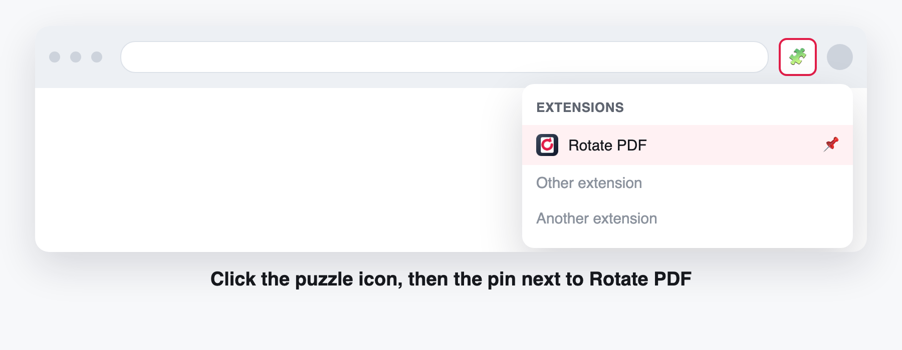
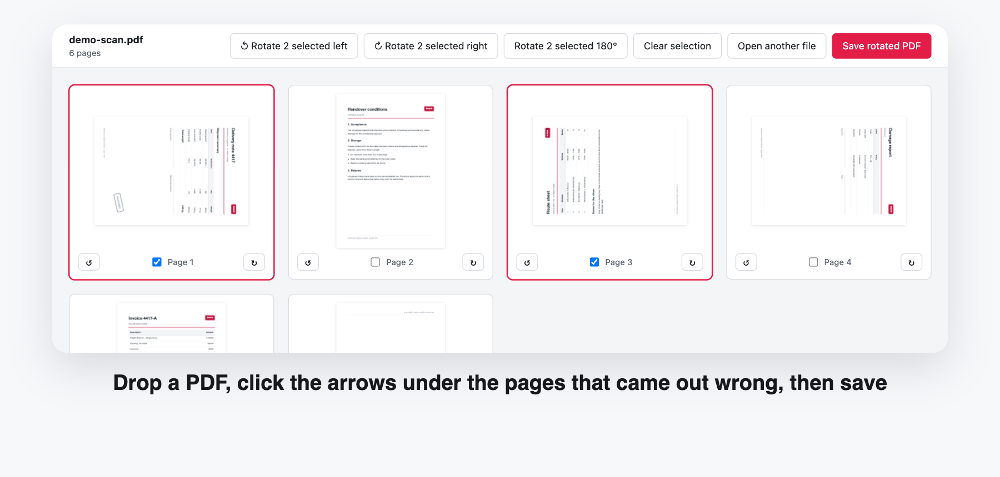

Rotate PDF is installed
Two short steps and the next sideways scan takes ten seconds.
Pin it to the toolbar

Chrome hides new extensions behind the puzzle icon. Pin Rotate PDF once and it stays one click away.
Open a file and turn the pages

Click the icon, drop a PDF into the window and use the arrows under any page. Turn one page, a selection or the whole file, then press Save. Your document is read on this computer and never uploaded.
Something not working? Answers to the common questions live on the Chrome Web Store listing.